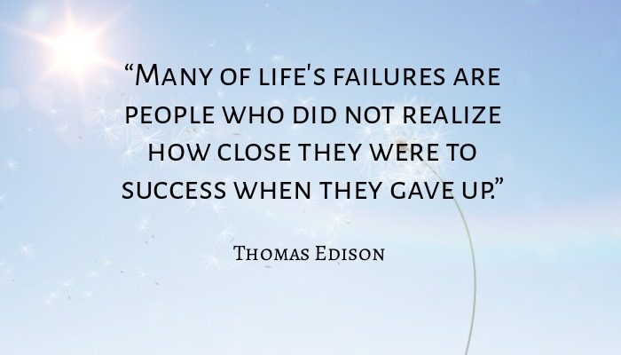

HOME ABOUT ME MY SELF HOBBIES FRIENDS QUOTES FAVOURITES
QUOTESQuote means to repeat the exact words of a speaker or an author. A quote is also a passage or statement repeated in this way. Quote means to cite something as a form of proof. Quote has several other senses as a verb and a noun. |
|||||||||||||||
| BEST QUOTES | ||
It takes courage to follow your own path and generate opportunities for yourself, but there are ways to do so. Always be on the lookout for new opportunities that help you to move your studies along. If you find a topic hard to understand, find a study group to help you or be proactive in going to extra tutorial sessions. |
Sometimes all the group projects and exams seem to add up to an unconquerable mountain of workload. If you’re feeling overwhelmed by college work, focus on what you’re getting started with first instead of planning too far into the future. Think about it this way: Anything you’ve accomplished so far, you started somewhere. |
|
 |
Fight the fear of failure with a positive attitude towards your studies. It’s natural to make mistakes when you’re learning something new. Remember that if you’re not getting started you can’t succeed either. |
Make sure you translate your positive thinking into actions to keep moving forward with your studies. Instead of a negative no-can-do attitude switch to a can-do philosophy. Don’t be afraid to try new things! College is for exploring and discovering new skills. |
Find things to do that give you confidence outside of your studies. See it as a study break to build up your confidence that will help you to stay optimistic. This can range from activities like making art to regular training sessions to keep fit. The little moments of success you have when you’re doing what you like best give you courage and hope. |
 | When it seems like you can’t go any further, the solution to your problem might just be waiting around the corner. So don’t give up and trust that you’ll find a way. You don’t want to risk giving up right before you succeed. |